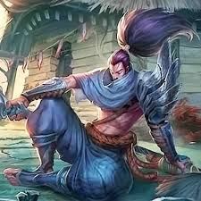

전사,암살자 / 난이도: 상
굳은 결의를 품은 아이오니아의 전사 야스오는 날렵한 검술과 바람을 자유로이 다루는 능력으로 적을 쓰러뜨린다. 젊은 시절, 자부심으로 가득 찼던 야스오는 스승을 살해한 누명을 쓰게 되고, 결백을 증명할 길이 없는 상황에서 급기야는 자신을 보호하기 위해 이부형까지 죽음으로 이끌게 된다. 훗날 스승을 살해한 진범이 밝혀지고 죽은 줄 알았던 형이 살아있다는 사실도 알게 되었으나, 지금도 야스오는 자신의 검을 인도하는 바람에만 의존한 채 세상을 떠돌고 있다. 과거의 자신을 아직 용서하지 못한 채로.